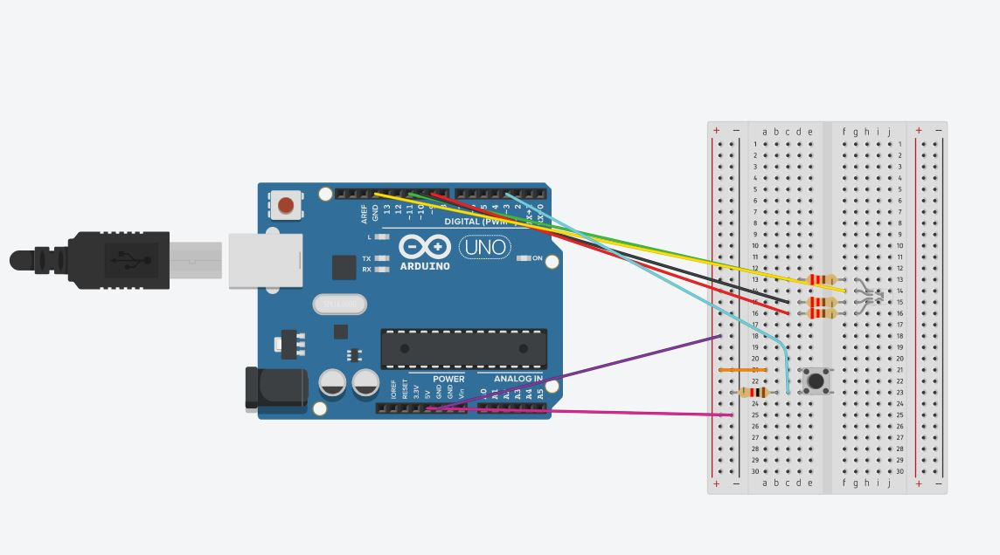
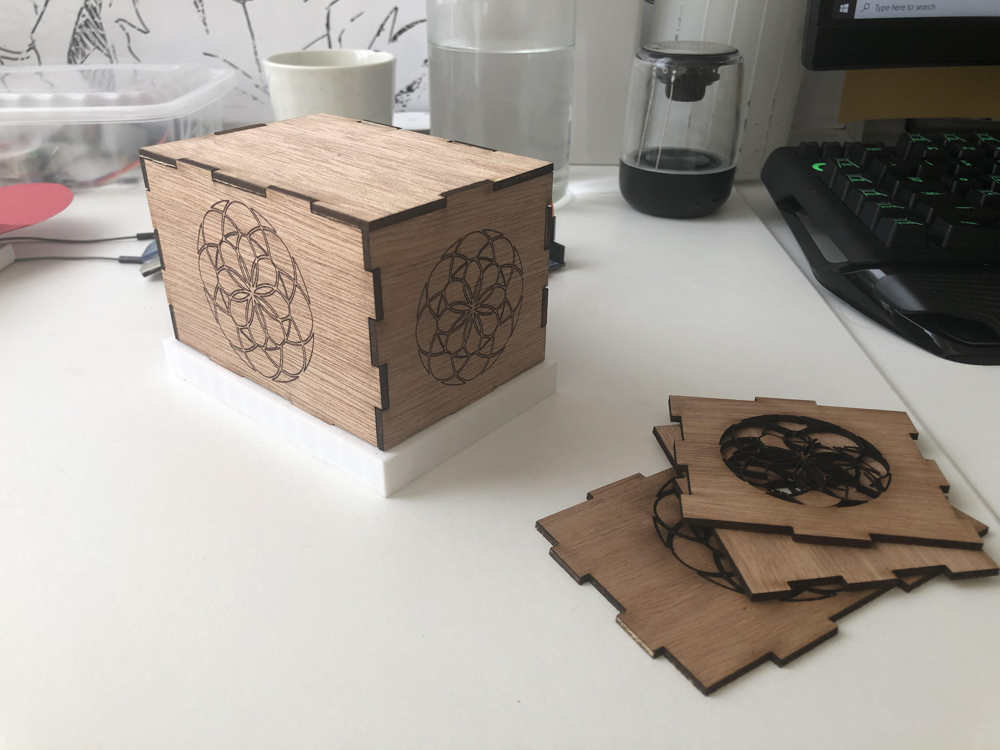
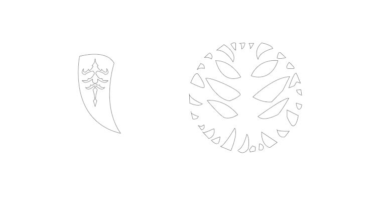
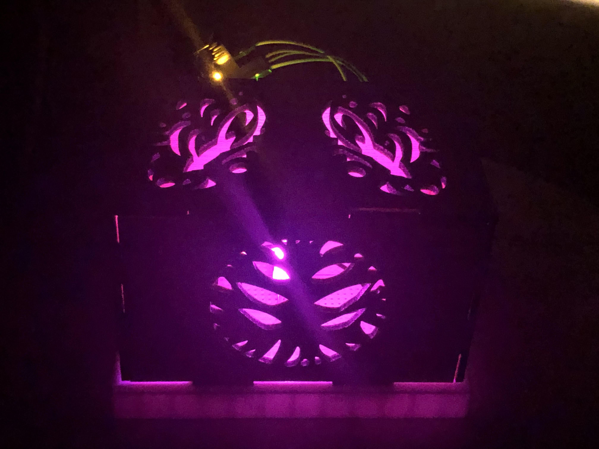
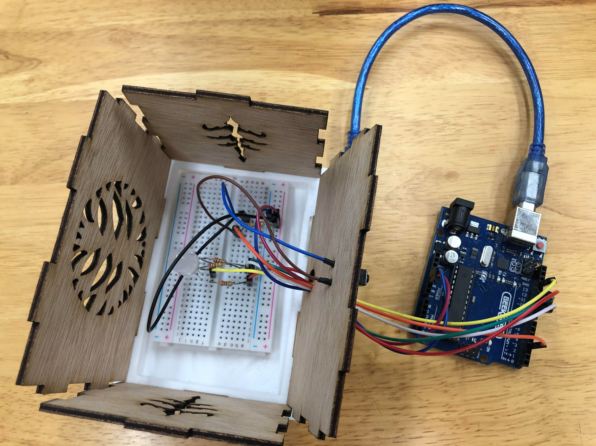

Introduction
Here is my documentation for my final project
Planning and sketching
Project Draft Version 1.0
This is the very first draft for my final project , however after consultation with my lecturer I decided to spice it up a little

Project Draft Version 2.0


Materials need
- 3mm thickness Wood for laser cutting
- 1 RGB LED
- 4 220 Ohm resistors
- One push button
- 1 1/2 breadboard 85mm x 55mm
- At least 9 male to male jumper wires
- At least 2 Female to male jumper wires
- Arduino Uno
- Arduino Uno connecter,used to connect to laptop for power supply
Project update 8/2/2020
The first component I model is the 3D printed base for the mood lamp
I first plan out the measurements , taking into consideration the dimension of the breadboard and thickness of the wood used for the laser cut box.

I plan out the various measurements inside Clip Studio Paint so that it would be very easy to model it out inside Fusion 360.

Project update 8/5/2020
For Embedded programing , I have a push button as the input and a RGB LED as the output.
Here is the schematic I have for this project
and here is the code I will be using


I got my inspiration from two projects that is published on Arduino project hub
I borrow the code from these two projects and tried to combine them
However I realise that there are mutiple problems with their code and could be optimised a lot more
Problems I found in both projects
- The value of the resistor used are too high, 220 ohm should be used instead of 1k
- The code did not put in the right variables
- Some wires in the schematic are placed in the wrong position
- Input should be Input-pullup instead of just Input
I manage to fix all these problems eventually and that is how I came up with the code above.
Code breakdown
To put it in very simple terms , here is what the code do- The code checks which pins are the outputs and which are the inputs
- It constantly checks if the button is pressed
- If the button is pressed, it adds 1 to a counter which changes what the RGB LED do
- The counter will first be equal to zero , which will tell the LED to fade in and out looping different colours at a time.
- When the button is pushed , the counter will now be equal to 1
- The RGB LED will have a red , green , blue light when the counter is equal to 1 , 2 and 3 respectively
- If the counter is equal to 3 and the button is pressed , it will reset itself back to equal 0.
Switch debounce problem
I put everything I have inside Tinkercad and it works as intended.
However when I connected everything in real life , the button counter counts more times than it should.
That is when I realise there is a switch debouncing problem.
Project update 7/9/2020
I did my laser cut box inside Fusion 360 in the same file as my 3d printed box

I also made my 3d printed box 20mm shorter due to the fact that cura told me it would take 6 hours to print.
Using illustrator
Now that I am finished modelling in Fusion 360 , I imported the sketch from Fusion 360 in DXF format and put it inside illustrator to combine it with a visual design.

For prototyping I used images from the game called "Hollow Knight" as a placeholder to test if a similarly thin pattern I had in mind for the final design will work.


Artist that created these designs
However , the pattern are far too thin and the 3mm plywood I used turned into timber.
So I did a vector engraving instead to test if it would fit the 3D printed box.
Everything went fits just fine , however now I need to come up with another design that does not have very thin patterns.
Second laser cut design
I created a design base on a character known as " The hunter " from Hollow knights.
Here is what he looks like in game

Here is what the pieces look like in illustrator

8/12/2020
I went back to school with fingers crossed that the patterns will turn out fine, because I was unable to make any changes if it does not. For context, my Laptop broke down and is under repair at a service center at the time.
Here is how it went

Everything went well and now I got my pieces , so I assembled everything and here is what it look like.
I notice that the LED i really bright and perhaps I should paste a paper behind the wood pieces so that light is more equally distributed.
8/14/2020
I went baack to school to soder my switch to 2 jumper wires since it keeps dropping off.
